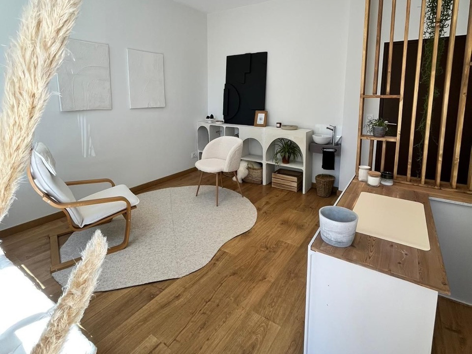

EMDR
Une thérapie qui s'adresse à toute personne, de l'enfant en bas âge à l'adulte, souffrant de perturbations émotionnelles généralement liées à des traumatismes psychologiques.
En savoir plusPsychologue clinicienne — Annecy
Un espace d'écoute, de bienveillance et de confiance pour les enfants, les adolescents et les jeunes adultes.

Psychologue clinicienne, je travaille essentiellement avec des enfants, des adolescents et des jeunes adultes individuellement ou en famille.
En offrant un espace d'écoute, de bienveillance et de confiance, j'accompagne les patients dans leur développement affectif et émotionnel, dans leurs questionnements et leurs difficultés, afin de trouver leurs propres solutions, leur apprendre à mieux se connaître, à se faire confiance et à mettre en lumière les ressources et les forces dont ils disposent déjà en eux, pour prétendre à un mieux-être.
Plus spécifiquement spécialisée en psychotraumatisme et neuropsychologie et en m'appuyant sur d'autres techniques complémentaires, je construis avec mes patients l'accompagnement adapté à leur problématique, à leurs besoins et à leurs objectifs.
Vos difficultés recouvrent une palette variée et peuvent être en lien, par exemple, avec :
Elles peuvent être source notamment de fatigabilité, stress, anxiété, souffrance.
Je m'appuie sur plusieurs approches complémentaires, choisies avec vous en fonction de votre problématique, de vos besoins et de vos objectifs.
Une thérapie qui s'adresse à toute personne, de l'enfant en bas âge à l'adulte, souffrant de perturbations émotionnelles généralement liées à des traumatismes psychologiques.
En savoir plusL'Intégration du Cycle de Vie propose de traverser un à un les souvenirs pour que le système corps-esprit intègre les événements et remette les choses à leur juste place.
En savoir plusUn traitement de réadaptation visant à améliorer l'attention, la mémoire, le langage et / ou les fonctions exécutives.
En savoir plusArrêt bus 3 Fontaines (lignes 4 ou 27) ou Loverchy cité, ligne 4.

N'hésitez pas à me contacter pour un premier échange.